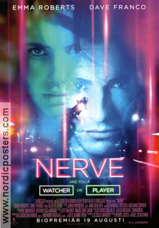

Adaptation of the first of J.K. Rowling's popular children's novels about Harry Potter, a boy who learns on his eleventh birthday that he is the orphaned son of two powerful wizards and possesses unique magical powers of his own. He is summoned from his life as an unwanted child to become a student at Hogwarts, an English boarding school for wizards. There, he meets several friends who become his closest allies and help him discover the truth about his parents' mysterious deaths.

Dominic Toretto (Vin Diesel) enjoys the adrenaline of street car racing and his fans treat him like a rock star. After a blazing encounter with the ruthless Johnny Tran, Dom decides to take Brian (Paul Walker), a newcomer to street racing, under his wing. Dom's sister Mia sees something she likes in Brian, too. Trouble is, neither of them realize he's an undercover cop, and Dominic and his rival Johnny Tran are both the prime suspects in a case involving dirty money and big-rig hijacking.

Simba idolizes his father, King Mufasa, and takes to heart his own royal destiny on the plains of Africa. But not everyone in the kingdom celebrates the new cub's arrival. Scar, Mufasa's brother -- and former heir to the throne -- has plans of his own. The battle for Pride Rock is soon ravaged with betrayal, tragedy and drama, ultimately resulting in Simba's exile. Now, with help from a curious pair of newfound friends, Simba must figure out how to grow up and take back what is rightfully his.

When a young nun at a cloistered abbey in Romania takes her own life, a priest with a haunted past and a novitiate on the threshold of her final vows are sent by the Vatican to investigate. Together, they uncover the order's unholy secret. Risking not only their lives but their faith and their very souls, they confront a malevolent force in the form of a demonic nun

Industrious high school senior Vee Delmonico (Emma Roberts) is tired of living life on the sidelines. Pressured by her friends, Vee decides to join Nerve, a popular online game that challenges players to accept a series of dares. It's not long before the adrenaline-fueled competition requires her to perform increasingly dangerous stunts. When Nerve begins to take a sinister turn, Vee finds herself in a high-stakes finale that will ultimately determine her entire future.
